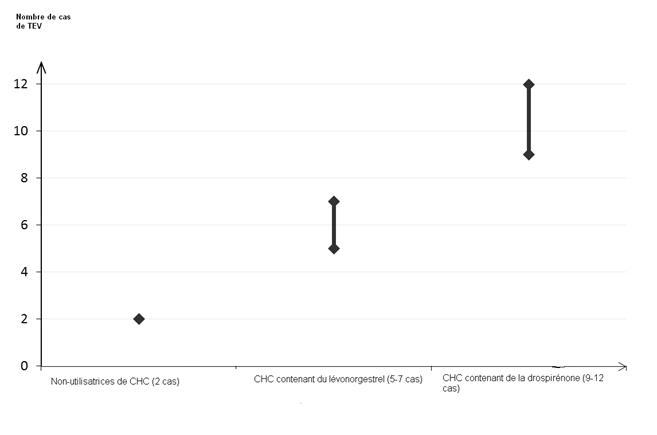

RÉSUMÉ DES CARACTÉRISTIQUES DU PRODUIT
ANSM - Mis à jour le : 22/10/2014
VALLCLARA 0,03 mg / 3 mg, comprimé pelliculé
2. COMPOSITION QUALITATIVE ET QUANTITATIVE
Comprimé jaune (comprimé actif) :
Chaque comprimé pelliculé contient 0,03 mg d’éthinylestradiol et 3 mg de drospirénone.
Excipient : un comprimé pelliculé contient 62 mg de lactose monohydraté
Comprimé blanc (comprimé placebo) :
Les comprimés blancs ne contiennent pas de substances actives.
Excipient : un comprimé pelliculé contient 89,5 mg de lactose anhydre
Pour la liste complète des excipients, voir rubrique 6.1.
Comprimé pelliculé.
Le comprimé actif est un comprimé pelliculé jaune et rond.
Le comprimé placebo est un comprimé pelliculé blanc et rond.
4.1. Indications thérapeutiques
La décision de prescrire VALLCLARA doit être prise en tenant compte des facteurs de risque de la patiente, notamment ses facteurs de risque de thrombo-embolie veineuse (TEV), ainsi que du risque de TEV associé à VALLCLARA en comparaison aux autres CHC (Contraceptifs Hormonaux Combinés) (voir rubriques 4.3 et 4.4).
4.2. Posologie et mode d'administration
Voie d'administration :
Voie orale.
Comment prendre VALLCLARA 0,03 mg/3 mg, comprimé pelliculé :
Les comprimés doivent être pris chaque jour, à peu près au même moment, éventuellement avec un peu de liquide, en respectant l'ordre indiqué sur la plaquette.
La prise des comprimés doit se faire de façon continue. Prendre un comprimé chaque jour pendant 28 jours consécutifs.
Commencer la plaquette suivante le jour suivant la prise du dernier comprimé de la plaquette précédente. Une hémorragie de privation débute généralement 2 ou 3 jours après avoir commencé la rangée des comprimés placebos (dernière rangée) et il est possible qu'elle ne soit pas terminée au moment d'entamer la plaquette suivante.
Modalités d’instauration du traitement par VALLCLARA 0,03 mg/3 mg, comprimé pelliculé :
· Absence de contraception hormonale antérieure (le mois précédent) :
La prise des comprimés doit commencer le 1er jour du cycle, c'est-à-dire le premier jour des règles.
· Relais d'une méthode contraceptive estroprogestative (contraception orale combinée / COC, anneau vaginal ou patch transdermique) :
Commencer le traitement par VALLCLARA 0,03 mg/3 mg, comprimé pelliculé de préférence le jour qui suit la prise du dernier comprimé actif (dernier comprimé contenant les substances actives) de la précédente COC, ou au plus tard le jour qui suit la période habituelle d’arrêt des comprimés, ou le jour suivant la prise du dernier comprimé placebo de la précédente COC.
En cas de relais d’un anneau vaginal ou d’un patch transdermique, prendre le 1er comprimé de VALLCLARA 0,03 mg/3 mg, comprimé pelliculé de préférence le jour du retrait, ou au plus tard le jour prévu pour la nouvelle pose.
· Relais d'une contraception progestative (pilule progestative seule, forme injectable, implant), ou par un système intra-utérin (SIU) contenant un progestatif :
Chez une femme, le relais peut se faire :
o à tout moment du cycle s'il s'agit d'une pilule progestative seule,
o le jour du retrait s'il s'agit d'un implant ou d'un SIU,
o ou le jour prévu pour l'injection suivante s'il s'agit d'une forme injectable.
Dans tous les cas, il sera recommandé aux femmes d'utiliser une méthode de contraception mécanique complémentaire pendant les 7 premiers jours de prise de VALLCLARA 0,03 mg/3 mg, comprimé pelliculé.
· Après une interruption de grossesse au cours du premier trimestre :
Il est possible de commencer une contraception immédiatement chez ces femmes. Il n'est pas nécessaire d'utiliser une méthode de contraception complémentaire.
· Après un accouchement ou une interruption de grossesse au cours du deuxième trimestre :
Il sera conseillé aux femmes de ne commencer une contraception qu'après 21 à 28 jours. Si cette contraception est démarrée plus tardivement, il leur sera recommandé d'utiliser une méthode de contraception mécanique complémentaire pendant les 7 premiers jours de traitement. Cependant, si des rapports sexuels ont déjà eu lieu, il convient de s'assurer de l'absence de grossesse avant le début de la prise du contraceptif oral estroprogestatif ou d'attendre les premières règles.
En cas d'allaitement, voir rubrique 4.6.
Conduite à tenir en cas d'oubli d'un ou plusieurs comprimés :
L’oubli de comprimés de la dernière rangée de la plaquette correspond à l’oubli de comprimés placebos et n’a donc pas de réelle importance. Cependant, les comprimés oubliés doivent être jetés pour éviter toute prolongation non-intentionnelle de la période sous placebo.
Les conseils suivants s’appliquent uniquement en cas d’oubli de comprimés actifs (c’est-à-dire de comprimés appartenant aux rangées 1 à 3 de la plaquette).
Un retard de moins de 12 heures dans la prise d'un comprimé ne modifie pas l’efficacité contraceptive. Il sera conseillé aux femmes de prendre le comprimé oublié immédiatement dès que cet oubli est constaté; la prise des comprimés suivants s'effectuant à l'heure habituelle.
Si le retard est supérieur à 12 heures, la sécurité contraceptive peut être diminuée. En cas d'oubli de comprimés, les deux règles suivantes doivent être connues car nécessaires pour choisir la conduite à tenir:
1. L’intervalle entre 2 plaquettes ne doit jamais dépasser 7 jours;
2. Sept jours de prise ininterrompue du traitement sont nécessaires afin d’obtenir une inhibition correcte de l'axe hypothalamo-hypophyso-ovarien.
En conséquence, les conseils suivants pourront être donnés dans le cadre de la pratique quotidienne.
· Semaine 1 :
Il devra être demandé aux femmes de prendre le dernier comprimé oublié dès que l'oubli est constaté, même si cela implique la prise de deux comprimés en même temps.
Les comprimés suivants devront être pris à l'heure habituelle. Une contraception mécanique complémentaire (préservatifs par exemple) est cependant nécessaire pendant les 7 jours suivants. Si des rapports sexuels ont eu lieu au cours des 7 jours précédant l’oubli, il existe un risque de grossesse.
Le risque de grossesse est d'autant plus élevé que le nombre de comprimés oubliés est important ou que la date de l'oubli est proche du début de la rangée des comprimés placebos.
· Semaine 2 :
Il devra être recommandé aux femmes de prendre le dernier comprimé oublié dès que l’oubli est constaté, même si cela implique la prise de deux comprimés en même temps.
Les comprimés suivants devront être pris à l'heure habituelle.
Si les comprimés ont été pris correctement au cours des 7 jours précédant le premier comprimé oublié, aucune mesure contraceptive complémentaire n'est nécessaire. Cependant, en cas d'oubli de plusieurs comprimés, il devra être recommandé aux femmes de prendre des précautions complémentaires pendant 7 jours.
· Semaine 3 :
Le risque de diminution de l'activité contraceptive est maximal en raison de la proximité de la prise des 7 jours de comprimés placebos.
Il est cependant possible d'empêcher la diminution de l'effet contraceptif en ajustant comme suit les modalités de prise des comprimés :
o Si la femme a pris correctement tous les comprimés pendant les 7 jours précédant l'oubli d'un comprimé, aucune mesure contraceptive complémentaire n'est nécessaire. Il est possible de suivre l'un des 2 schémas de prise décrits ci-dessous.
o Dans le cas contraire, il devra être recommandé aux femmes de suivre le premier schéma de prise et d'utiliser une méthode contraceptive complémentaire pendant les 7 jours suivants.
Schéma 1:
Il sera recommandé aux femmes de prendre le dernier comprimé oublié dès que cet oubli est constaté, même si deux comprimés doivent être pris en même temps.
Les comprimés suivants sont ensuite pris à l'heure habituelle, jusqu'à avoir terminé les comprimés actifs de la plaquette. Les sept comprimés de la dernière rangée (comprimés placebos) ne doivent pas être pris. La plaquette suivante doit être commencée immédiatement. Une hémorragie de privation est peu probable avant la fin des comprimés actifs de la seconde plaquette, mais des « spottings » ou des métrorragies peuvent être observés pendant la durée de prise des comprimés.
Schéma 2:
On peut alternativement conseiller à la femme d'interrompre la prise des comprimés actifs de la plaquette en cours. Elle devra alors prendre des comprimés de la dernière rangée (comprimés placebos) pendant 7 jours maximum, incluant le nombre de jours où des comprimés ont été oubliés, et elle commencera ensuite la plaquette suivante.
Chez une femme ayant oublié de prendre un (des) comprimé(s), l'absence d'hémorragie de privation durant la prise des comprimés placebos devra faire rechercher une éventuelle grossesse.
Conduite à tenir en cas de troubles gastro-intestinaux :
En cas de troubles gastro-intestinaux sévères (par exemple des vomissements ou une diarrhée), l'absorption d’un comprimé peut ne pas être complète; des mesures contraceptives complémentaires doivent donc être prises.
· Si des vomissements se produisent dans les 3-4 heures suivant la prise d’un comprimé actif, un nouveau comprimé doit être pris en remplacement dès que possible. Le nouveau comprimé doit être pris si possible dans les 12 heures qui suivent l’heure habituelle de prise.
· Si plus de 12 heures se sont écoulées, les mêmes consignes que celles données pour les oublis de comprimés doivent s’appliquer (voir rubrique 4.2. « Conduite à tenir en cas d’oubli d’un ou plusieurs comprimés »).
Si la femme ne veut pas modifier le calendrier normal de prise des comprimés, elle doit prendre le(s) comprimé(s) supplémentaire(s) à partir d’une autre plaquette.
Comment retarder les règles ?
La survenue des règles peut être retardée en commençant une nouvelle plaquette de VALLCLARA 0,03 mg/3 mg, comprimé pelliculé sans prendre des comprimés placebos de la plaquette en cours.
Les règles peuvent être retardées jusqu'à la fin des comprimés actifs de la seconde plaquette si nécessaire.
Pendant cette période, des métrorragies ou des « spottings » peuvent se produire.
VALLCLARA 0,03 mg/3 mg, comprimé pelliculé peut ensuite être repris après la prise des comprimés placebos.
Il est possible de décaler la survenue des règles à un autre jour de la semaine en raccourcissant la durée de la prise des comprimés placebos du nombre de jours nécessaires.
Comme pour un retard de règles, plus l'intervalle est court, plus le risque d'absence d'hémorragie de privation et de survenue de métrorragies ou de « spottings » lors de la prise des comprimés de la plaquette suivante est important.
En cas de survenue pour la première fois de l'une de ces pathologies lors de la prise d'une contraception orale, interrompre immédiatement le traitement:
· Présence ou risque de thrombo-embolie veineuse (TEV) :
o Thrombo-embolie veineuse – présence de TEV (patient traité par des anticoagulants) ou antécédents de TEV (p. ex. thrombose veineuse profonde [TVP] ou embolie pulmonaire [EP]).
o Prédisposition connue, héréditaire ou acquise, à la thrombo-embolie veineuse, telle qu’une résistance à la protéine C activée (PCa) (y compris une mutation du facteur V de Leiden), un déficit en antithrombine III, un déficit en protéine C, un déficit en protéine S.
o Intervention chirurgicale majeure avec immobilisation prolongée (voir rubrique 4.4).
o Risque élevé de thrombo-embolie veineuse dû à la présence de multiples facteurs de risque (voir rubrique 4.4).
· Présence ou risque de thrombo-embolie artérielle (TEA) :
o Thrombo-embolie artérielle – présence ou antécédents de thrombo-embolie artérielle (p. ex. infarctus du myocarde [IM]) ou de prodromes (p. ex. angine de poitrine).
o Affection cérébrovasculaire – présence ou antécédents d’accident vasculaire cérébral (AVC) ou de prodromes (p. ex. accident ischémique transitoire [AIT]).
o Prédisposition connue, héréditaire ou acquise, à la thrombo-embolie artérielle, telle qu’une hyperhomocystéinémie ou la présence d’anticorps anti-phospholipides (anticorps anti-cardiolipine, anticoagulant lupique).
o Antécédents de migraine avec signes neurologiques focaux.
· Risque élevé de thrombo-embolie artérielle dû à la présence de multiples facteurs de risque (voir rubrique 4.4) ou d’un facteur de risque sévère tel que :
§ diabète avec symptômes vasculaires ;
§ hypertension artérielle sévère ;
§ dyslipoprotéinémie sévère.
· Affection hépatique sévère ou antécédent d'affection hépatique sévère, en l'absence de normalisation des tests fonctionnels hépatiques ;
· Insuffisance rénale sévère ou aiguë;
· Tumeur hépatique (bénigne ou maligne) évolutive ou ancienne
· Tumeur maligne hormono-dépendante connue ou suspectée (exemple: organes génitaux ou seins);
· Saignements vaginaux d'origine inconnue;
· Hypersensibilité à l'un des composants actifs ou à l'un des excipients de VALLCLARA, voir rubrique 6.1.
4.4. Mises en garde spéciales et précautions d'emploi
Si la patiente présente l’un des troubles ou l’un des facteurs de risque mentionnés ci-dessous, la pertinence du traitement par VALLCLARA doit être discutée avec elle.
En cas d’aggravation ou de survenue de l’un de ces troubles ou facteurs de risque, la nécessité d’interrompre l’utilisation de VALLCLARA doit être discutée entre le médecin et la patiente.
Risque de thrombo-embolie veineuse (TEV)
Le risque de TEV est augmenté chez les femmes qui utilisent un contraceptif hormonal combiné (CHC) en comparaison aux femmes qui n’en utilisent pas. Les CHC contenant du lévonorgestrel, du norgestimate ou de la noréthistérone sont associés au risque de TEV le plus faible. Le risque de TEV associé aux autres CHC, tels que VALLCLARA, peut être jusqu’à deux fois plus élevé. La décision d’utiliser tout autre CHC que ceux associés au risque de TEV le plus faible doit être prise uniquement après concertation avec la patiente afin de s’assurer qu’elle comprend le risque de TEV associé à VALLCLARA, l’influence de ses facteurs de risque actuels sur ce risque et le fait que le risque de TEV est maximal pendant la première année d’utilisation. Certaines données indiquent également une augmentation du risque lors de la reprise d’un CHC après une interruption de 4 semaines ou plus.
Parmi les femmes qui n’utilisent pas de CHC et qui ne sont pas enceintes, environ 2 sur 10 000 développeront une TEV sur une période d’un an. Cependant, chez une femme donnée, le risque peut être considérablement plus élevé, selon les facteurs de risque qu’elle présente (voir ci-dessous).
On estime1 que sur 10 000 femmes qui utilisent un CHC contenant de la drospirénone, 9 à 12 développeront une TEV sur une période d’un an ; ce nombre est à comparer à celui d’environ 62 chez les femmes qui utilisent un CHC contenant du lévonorgestrel.
Dans les deux cas, le nombre de TEV par année est inférieur à celui attendu pendant la grossesse ou en période post-partum.
La TEV peut être fatale dans 1 à 2 % des cas.
1Ces incidences ont été estimées à partir de l’ensemble des données des études épidémiologiques, en s’appuyant sur les risques relatifs liés aux différents CHC en comparaison aux CHC contenant du lévonorgestrel.
2 Point central de l’intervalle de 5-7 pour 10 000 années-femmes sur la base d’un risque relatif, pour les CHC contenant du lévonorgestrel par rapport à la non-utilisation d’un CHC, d’environ 2,3 à 3,6
Nombre de cas de TEV pour 10 000 femmes sur une période d’un an

De façon extrêmement rare, des cas de thrombose ont été signalés chez des utilisatrices de CHC dans d’autres vaisseaux sanguins, p. ex. les veines et artères hépatiques, mésentériques, rénales ou rétiniennes.
Facteurs de risque de TEV
Le risque de complications thrombo-emboliques veineuses chez les utilisatrices de CHC peut être considérablement accru si d’autres facteurs de risque sont présents, en particulier si ceux-ci sont multiples (voir le tableau ci-dessous).
VALLCLARA est contre-indiqué chez les femmes présentant de multiples facteurs de risque, ceux-ci les exposant à un risque élevé de thrombose veineuse (voir rubrique 4.3). Lorsqu’une femme présente plus d’un facteur de risque, il est possible que l’augmentation du risque soit supérieure à la somme des risques associés à chaque facteur pris individuellement – dans ce cas, le risque global de TEV doit être pris en compte. Si le rapport bénéfice/risque est jugé défavorable, le CHC ne doit pas être prescrit (voir rubrique 4.3).
Tableau : Facteurs de risque de TEV
|
Facteur de risque |
Commentaire |
|
Obésité (indice de masse corporelle supérieur à 30 kg/m²) |
L’élévation de l’IMC augmente considérablement le risque. Ceci est particulièrement important à prendre en compte si d’autres facteurs de risque sont présents. |
|
Immobilisation prolongée, intervention chirurgicale majeure, toute intervention chirurgicale sur les jambes ou le bassin, neurochirurgie ou traumatisme majeur
Remarque : l’immobilisation temporaire, y compris les trajets aériens > 4 heures, peut également constituer un facteur de risque de TEV, en particulier chez les femmes présentant d’autres facteurs de risque |
Dans ces situations, il est conseillé de suspendre l’utilisation de la pilule (au moins quatre semaines à l’avance en cas de chirurgie programmée) et de ne reprendre le CHC que deux semaines au moins après la complète remobilisation. Une autre méthode de contraception doit être utilisée afin d’éviter une grossesse non désirée. Un traitement anti-thrombotique devra être envisagé si VALLCLARA n’a pas été interrompu à l’avance.
|
|
Antécédents familiaux (thrombo-embolie veineuse survenue dans la fratrie ou chez un parent, en particulier à un âge relativement jeune, c.-à-d. avant 50 ans) |
En cas de prédisposition héréditaire suspectée, la femme devra être adressée à un spécialiste pour avis avant toute décision concernant l’utilisation de CHC |
|
Autres affections médicales associées à la TEV |
Cancer, lupus érythémateux disséminé, syndrome hémolytique et urémique, maladies inflammatoires chroniques intestinales (maladie de Crohn ou rectocolite hémorragique) et drépanocytose |
|
Âge |
En particulier au-delà de 35 ans |
Il n’existe aucun consensus quant au rôle éventuel joué par les varices et les thrombophlébites superficielles dans l’apparition ou la progression d’une thrombose veineuse.
L’augmentation du risque de thrombo-embolie pendant la grossesse, et en particulier pendant les 6 semaines de la période puerpérale, doit être prise en compte (pour des informations concernant « Grossesse et allaitement », voir rubrique 4.6).
Symptômes de TEV (thrombose veineuse profonde et embolie pulmonaire)
Les femmes doivent être informées qu’en cas d’apparition de ces symptômes, elles doivent consulter un médecin en urgence et lui indiquer qu’elles utilisent un CHC. Les symptômes de la thrombose veineuse profonde (TVP) peuvent inclure :
· gonflement unilatéral d’une jambe et/ou d’un pied ou le long d’une veine de la jambe ;
· douleur ou sensibilité dans une jambe, pouvant n’être ressentie qu’en position debout ou lors de la marche ;
· sensation de chaleur, rougeur ou changement de la coloration cutanée de la jambe affectée.
· Les symptômes de l’embolie pulmonaire (EP) peuvent inclure :
· apparition soudaine et inexpliquée d’un essoufflement ou d’une accélération de la respiration ;
· toux soudaine, pouvant être associée à une hémoptysie ;
· douleur thoracique aiguë ;
· étourdissements ou sensations vertigineuses sévères ;
· battements cardiaques rapides ou irréguliers.
Certains de ces symptômes (p. ex. « essoufflement », « toux ») ne sont pas spécifiques et peuvent être interprétés à tort comme des signes d’événements plus fréquents ou moins sévères (infections respiratoires, p. ex.).
Les autres signes d’une occlusion vasculaire peuvent inclure : douleur soudaine, gonflement et coloration légèrement bleutée d’une extrémité.
Si l’occlusion se produit dans l’œil, les symptômes peuvent débuter sous la forme d’une vision trouble indolore pouvant évoluer vers une perte de la vision. Dans certains cas, la perte de la vision peut survenir presque immédiatement.
Risque de thrombo-embolie artérielle (TEA)
Des études épidémiologiques ont montré une association entre l’utilisation de CHC et l’augmentation du risque de thrombo-embolie artérielle (infarctus du myocarde) ou d’accident cérébrovasculaire (p. ex. accident ischémique transitoire, AVC). Les événements thrombo-emboliques artériels peuvent être fatals.
Facteurs de risque de TEA
Le risque de complications thrombo-emboliques artérielles ou d’accident cérébrovasculaire chez les utilisatrices de CHC augmente avec la présence de facteurs de risque (voir le tableau). VALLCLARA est contre-indiqué chez les femmes présentant un facteur de risque sévère ou de multiples facteurs de risque de TEA qui les exposent à un risque élevé de thrombose artérielle (voir rubrique 4.3). Lorsqu’une femme présente plus d’un facteur de risque, il est possible que l’augmentation du risque soit supérieure à la somme des risques associés à chaque facteur pris individuellement – dans ce cas, le risque global doit être pris en compte. Si le rapport bénéfice/risque est jugé défavorable, le CHC ne doit pas être prescrit (voir rubrique 4.3).
Tableau : Facteurs de risque de TEA
|
Facteur de risque |
Commentaire |
|
Âge |
En particulier au-delà de 35 ans |
|
Tabagisme |
Il doit être conseillé aux femmes de ne pas fumer si elles souhaitent utiliser un CHC. Il doit être fortement conseillé aux femmes de plus de 35 ans qui continuent de fumer d’utiliser une méthode de contraception différente. |
|
Hypertension artérielle |
|
|
Obésité (indice de masse corporelle supérieur à 30 kg/m2) |
L’élévation de l’IMC augmente considérablement le risque. Ceci est particulièrement important à prendre en compte chez les femmes présentant d’autres facteurs de risque. |
|
Antécédents familiaux (thrombo-embolie artérielle survenue dans la fratrie ou chez un parent, en particulier à un âge relativement jeune, c.-à-d. avant 50 ans) |
En cas de prédisposition héréditaire suspectée, la femme devra être adressée à un spécialiste pour avis avant toute décision concernant l’utilisation de CHC. |
|
Migraine |
L’accroissement de la fréquence ou de la sévérité des migraines lors de l’utilisation d’un CHC (qui peut être le prodrome d’un événement cérébrovasculaire) peut constituer un motif d’arrêt immédiat du CHC. |
|
Autres affections médicales associées à des événements indésirables vasculaires |
Diabète, hyperhomocystéinémie, valvulopathie cardiaque et fibrillation auriculaire, dyslipoprotéinémie et lupus érythémateux disséminé |
Symptômes de TEA
Les femmes doivent être informées qu’en cas d’apparition de ces symptômes, elles doivent consulter un médecin en urgence et lui indiquer qu’elles utilisent un CHC.
Les symptômes d’un accident cérébrovasculaire peuvent inclure :
· apparition soudaine d’un engourdissement ou d’une faiblesse du visage, d’un bras ou d’une jambe, en particulier d’un côté du corps ;
· apparition soudaine de difficultés à marcher, de sensations vertigineuses, d’une perte d’équilibre ou de coordination ;
· apparition soudaine d’une confusion, de difficultés à parler ou à comprendre ;
· apparition soudaine de difficultés à voir d’un œil ou des deux yeux ;
· céphalée soudaine, sévère ou prolongée, sans cause connue ;
· perte de conscience ou évanouissement avec ou sans crise convulsive.
· Des symptômes temporaires suggèrent qu’il s’agit d’un accident ischémique transitoire (AIT).
Les symptômes de l’infarctus du myocarde (IM) peuvent inclure :
· douleur, gêne, pression, lourdeur, sensation d’oppression ou d’encombrement dans la poitrine, le bras ou sous le sternum ;
· sensation de gêne irradiant vers le dos, la mâchoire, la gorge, le bras, l’estomac ;
· sensation d’encombrement, d’indigestion ou de suffocation ;
· transpiration, nausées, vomissements ou sensations vertigineuses ;
· faiblesse, anxiété ou essoufflement extrêmes ;
· battements cardiaques rapides ou irréguliers.
En raison du potentiel tératogène d’un traitement anti-coagulant par rérivés coumariniques, une autre méthode contraceptive appropriée doit être instaurée.
Cancers :
· Certaines études épidémiologiques suggèrent que les contraceptifs oraux pourraient être associés à une augmentation du risque de cancer du col de l'utérus chez les utilisatrices de COC à long terme (> 5 ans). Il n'est cependant pas établi si ces pathologies sont dues à d'autres facteurs comme le comportement sexuel et le papillomavirus virus humain (HPV).
· Une méta-analyse de 54 études épidémiologiques a conclu qu'il existe une légère augmentation du risque relatif (RR = 1,24) de cancer du sein chez les femmes sous contraception orale. Cette majoration du risque disparaît progressivement au cours des 10 ans qui suivent l'arrêt d'une contraception orale.
· Le cancer du sein étant rare chez les femmes de moins de 40 ans, le nombre plus élevé de cancers diagnostiqués chez les utilisatrices habituelles ou nouvelles utilisatrices d'une contraception orale reste faible par rapport au risque global de cancer du sein.
· Ces études ne permettent pas d'établir une relation de causalité. Il est possible que, chez les utilisatrices de contraception orale, cette augmentation du risque soit due à un diagnostic plus précoce du cancer du sein, aux effets biologiques de cette contraception ou à l'association des deux. Les cancers du sein diagnostiqués chez les utilisatrices ont tendance à être moins évolués cliniquement par rapport à ceux diagnostiqués chez des femmes n'en ayant jamais utilisé. Dans de rares cas, des tumeurs bénignes du foie, et dans de plus rares cas encore, des tumeurs malignes du foie ont été rapportées chez des utilisatrices de contraceptifs oraux.
· Dans des cas isolés, ces tumeurs ont conduit à des hémorragies intra-abdominales mettant en jeu le pronostic vital. Chez les femmes sous contraceptifs oraux, la survenue de douleurs de la partie supérieure de l'abdomen, d'augmentation du volume du foie ou de signes d'hémorragie intra-abdominale doit faire évoquer une tumeur hépatique.
· L'utilisation de contraceptifs oraux plus fortement dosés (50 µg éthinylestradiol) diminue le risque de cancer de l'endomètre et de l'ovaire. Ceci demande à être confirmé avec les contraceptifs oraux plus faiblement dosés.
Autres pathologies :
VALLCLARA contient un progestatif antagoniste de l'aldostérone ayant des propriétés d'épargne potassique. Dans la plupart des cas, aucune augmentation de la kaliémie n'est attendue. Cependant, dans une étude clinique, une augmentation modérée non significative de la kaliémie a été observée chez des patientes présentant une insuffisance rénale légère à modérée lors de la prise concomitante de drospirénone et de médicaments épargneurs de potassium. De ce fait, il est recommandé de vérifier la kaliémie lors du premier cycle du traitement chez les patientes présentant une insuffisance rénale pour lesquelles la kaliémie est située dans la limite supérieure à la normale avant traitement, en particulier en cas de prise associée de médicaments épargneurs de potassium (voir également rubrique 4.5).
Chez les femmes atteintes d'hypertriglycéridémie ou ayant des antécédents familiaux d'hypertriglycéridémie, un risque accru de pancréatite peut survenir en cas d'utilisation d'une contraception orale.
Une augmentation modérée de la pression artérielle a été observée chez de nombreuses femmes sous contraception orale: rarement cliniquement significative. Une interruption immédiate de la contraception orale n'est justifiée que dans ces rares cas.
La persistance de chiffres tensionnels élevés ou le non contrôle des chiffres tensionnels par un traitement antihypertenseur chez une femme hypertendue prenant une contraception orale doit faire interrompre celle-ci. Cette contraception pourra éventuellement être reprise après normalisation des chiffres tensionnels par un traitement antihypertenseur.
La survenue ou l'aggravation des pathologies suivantes a été observée au cours de la grossesse ou chez des femmes prenant des contraceptifs oraux, bien que la responsabilité des estroprogestatifs n'ait pu être établie: ictère et/ou prurit dû à une cholestase, lithiase biliaire, porphyrie, lupus érythémateux disséminé, syndrome hémolytico-urémique, chorée de Sydenham, herpès gravidique, hypoacousie par otosclérose.
Chez les femmes présentant un angiœdème héréditaire, les estrogènes exogènes peuvent induire ou aggraver des symptômes d'angiœdème.
La survenue d'anomalies hépatiques aiguës ou chroniques peut nécessiter l'arrêt des contraceptifs oraux jusqu'à la normalisation des paramètres hépatiques.
La récidive d'un ictère cholestatique et/ou d'un prurit liés à une cholestase survenue au cours d'une grossesse précédente ou de la prise antérieure d'hormones stéroïdiennes doit faire arrêter les contraceptifs oraux.
Les contraceptifs oraux peuvent avoir un effet sur la résistance périphérique à l'insuline et la tolérance au glucose; il n'est cependant pas obligatoire de modifier le traitement chez des diabétiques utilisant une contraception orale faiblement dosée (contenant moins de 0,05 mg d'éthinylestradiol). Les femmes diabétiques doivent cependant être étroitement surveillées, en particulier lors de l'instauration d'une contraception orale.
Des cas d'aggravations de dépression endogène, d'épilepsie, de maladie de Crohn et de rectocolite hémorragique ont été observés sous contraceptifs oraux.
Un chloasma peut survenir, en particulier chez les femmes ayant des antécédents de chloasma gravidique. Les femmes ayant une prédisposition au chloasma sous contraceptifs oraux doivent éviter de s'exposer au soleil ou aux rayons ultra-violets.
Chaque comprimé jaune de ce médicament contient 62 mg de lactose et chaque comprimé blanc contient 89.5 mg de lactose. Son utilisation est déconseillée chez les patients présentant une intolérance au galactose, un déficit en lactase de lapp ou un syndrome de malabsorption du glucose ou du galactose (maladies héréditaires rares).
Consultation/examen médical
Avant l’instauration ou la reprise d’un traitement par VALLCLARA, une recherche complète des antécédents médicaux (y compris les antécédents familiaux) doit être effectuée et la présence d’une grossesse doit être exclue. La pression artérielle doit être mesurée et un examen physique doit être réalisé, en ayant à l’esprit les contre-indications (voir rubrique 4.3) et les mises en garde (voir rubrique 4.4). Il est important d’attirer l’attention des patientes sur les informations relatives à la thrombose veineuse et artérielle, y compris le risque associé à VALLCLARA comparé à celui associé aux autres CHC, les symptômes de la TEV et de la TEA, les facteurs de risque connus et la conduite à tenir en cas de suspicion de thrombose.
Il doit également être indiqué aux patientes de lire attentivement la notice et de suivre les conseils fournis. La fréquence et la nature des examens doivent être définies sur la base des recommandations en vigueur et adaptées à chaque patiente.
Les patientes doivent être averties que les contraceptifs hormonaux ne protègent pas contre l’infection par le VIH (SIDA) et les autres maladies sexuellement transmissibles.
Diminution de l'efficacité:
L'efficacité d'une COC peut être diminuée en cas d'oubli de comprimés (voir rubrique 4.2), de troubles gastro-intestinaux (voir rubrique 4.2) ou de prise concomitante de certains traitements (voir rubrique 4.5).
Troubles du cycle:
Des saignements irréguliers (« spottings » ou métrorragies) peuvent survenir sous contraceptifs oraux, en particulier au cours des premiers mois. Ces saignements irréguliers seront considérés comme significatifs s'ils persistent après environ 3 cycles.
Si les saignements irréguliers persistent ou surviennent après des cycles réguliers, une recherche étiologique non hormonale doit alors être effectuée; des examens diagnostiques appropriés doivent être pratiqués afin d'exclure une tumeur maligne ou une grossesse. Ces examens peuvent comporter un curetage.
Chez certaines femmes, les hémorragies de privation peuvent ne pas survenir au cours de l'intervalle libre. Si la contraception orale a été suivie telle que décrite dans la rubrique 4.2, il est peu probable que la femme soit enceinte. Cependant, si la contraception orale n'a pas été suivie correctement avant l'absence de la première hémorragie de privation ou si deux hémorragies de privation successives ne se produisent pas, il convient de s'assurer de l'absence de grossesse avant de poursuivre cette contraception.
4.5. Interactions avec d'autres médicaments et autres formes d'interactions
NB: l'information relative à la prescription des médicaments associés doit être consultée pour identifier toute interaction éventuelle.
· Influence d'autres médicaments sur VALLCLARA 0,03 mg/3 mg, comprimé pelliculé :
Les interactions entre les contraceptifs oraux et d'autres médicaments peuvent induire des métrorragies et/ou conduire à l'échec de la contraception.
Les interactions suivantes ont été rapportées dans la littérature.
o Avec le métabolisme hépatique
Des interactions peuvent se produire avec des médicaments inducteurs des enzymes hépatiques, ce qui peut conduire à une augmentation de la clairance des hormones sexuelles (par exemple, la phénytoïne, les barbituriques, la primidone, la carbamazépine, la rifampicine, le bosentan et les médicaments contre le VIH (par exemple ritonavir, névirapine) et aussi de façon possible avec l'oxcarbazépine, le topiramate, le felbamate, la griséofulvine et les préparations contenant du millepertuis (Hypericum perforatum, plante médicinale)).
En général, l’induction enzymatique maximale est observée au bout d’environ 10 jours de traitement; cependant, cet effet peut ensuite se prolonger au moins 4 semaines après l'arrêt du traitement.
o Interférences avec la circulation entéro-hépatique.
Des échecs de la contraception ont également été rapportés avec les antibiotiques de la classe des pénicillines et des tétracyclines. Le mécanisme de cet effet n'est pas connu.
o Conduite à tenir
Les femmes prenant pendant une courte durée un médicament appartenant à l'une des classes mentionnées ci-dessus ou d'autres substances actives (médicaments inducteurs enzymatiques) autre que la rifampicine, doivent utiliser temporairement, en plus de leur contraception orale, pendant toute la durée de ce traitement et pendant les 7 jours qui suivent l'arrêt du traitement, une méthode contraceptive mécanique complémentaire.
En cas de traitement par la rifampicine, les mêmes précautions s’appliquent mais la contraception mécanique doit être poursuivie 28 jours après l’arrêt de l’antibiotique.
Chez les femmes prenant un traitement à long terme par des substances actives ayant une action inductrice sur les enzymes hépatiques, une autre méthode de contraception fiable, non hormonale est recommandée.
Les femmes sous traitement par antibiotiques (autre que la rifampicine, voir ci-dessus) doivent utiliser une contraception mécanique jusqu'à 7 jours après l'arrêt.
Si l'administration du traitement concomitant va au-delà des comprimés actifs de la plaquette du contraceptif oral en cours, les comprimés placebos doivent être jetés et la plaquette suivante commencée immédiatement.
Les principaux métabolites sanguins de la drospirénone n'impliquent en général pas le cytochrome P450. Les inhibiteurs de ce système enzymatique ne devraient donc pas avoir d'influence sur le métabolisme de la drospirénone.
· Influence de VALLCLARA 0,03 mg/3 mg, comprimé pelliculé sur d'autres médicaments :
Les contraceptifs oraux peuvent modifier le métabolisme de certaines autres substances actives. Les concentrations plasmatiques et tissulaires peuvent donc être soit augmentées (ex: ciclosporine) ou diminuées (ex: lamotrigine).
Chez des femmes volontaires, des études d'inhibition in vitro et des études d'interaction in vivo réalisées avec l'oméprazole, la simvastatine et le midazolam comme marqueur, ont montré qu'une interaction de la drospirérone à des doses de 3 mg avec le métabolisme d'autres médicaments était peu probable.
· Autres interactions :
Chez les patientes ayant une fonction rénale normale, l'association de drospirénone avec un IEC ou un AINS n'a pas montré d'effet significatif sur la kaliémie. Néanmoins, l'utilisation de VALLCLARA 0,03 mg/3 mg, comprimé pelliculé en association avec les antagonistes de l'aldostérone ou des diurétiques épargneurs de potassium n'a pas été étudiée. Dans ce cas, un dosage de la kaliémie pendant le premier cycle de traitement est recommandé (voir également la rubrique 4.4).
· Examens biologiques :
L'utilisation de contraceptifs hormonaux peut modifier les résultats de certains examens biologiques tels que : les tests fonctionnels hépatiques, thyroïdiens, surrénaliens et rénaux, le taux plasmatique des protéines (porteuses) comme la corticosteroid-binding globulin (CBG) et des fractions lipidiques/lipoprotéiniques, les paramètres du métabolisme glucidique, les paramètres de la coagulation et de la fibrinolyse. Les modifications restent en général dans les limites de la normale. En raison de sa légère activité anti-minéralocorticoïde, la drospirénone accroît l'activité rénine plasmatique et l'aldostéronémie.
VALLCLARA n'est pas indiqué pendant la grossesse.
En cas de découverte d'une grossesse sous VALLCLARA, son utilisation devra être immédiatement interrompue.
De nombreuses études épidémiologiques n'ont pas révélé de risque augmenté d'anomalies congénitales chez les enfants nés de femmes ayant utilisé un contraceptif oral avant la grossesse. Aucun effet tératogène n'a été observé si un contraceptif a été pris par erreur au cours de la grossesse.
Des études chez l'animal ont montré la présence d'effets indésirables au cours de la grossesse et de l'allaitement (voir rubrique 5.3). D'après ces données chez l'animal, un effet indésirable dû à l'activité hormonale des principes actifs ne peut être exclu. Cependant, sur la base de l'expérience de l'utilisation des contraceptifs oraux pendant la grossesse, un tel effet indésirable n'a pas été observé chez l'homme.
Les données disponibles concernant l'utilisation de l’association éthinylestradiol et drospirénone au cours de la grossesse sont trop peu nombreuses pour permettre de conclure à d'éventuels effets néfastes de VALLCLARA sur la grossesse ou sur la santé du fœtus ou du nouveau-né. Aucune donnée épidémiologique ne permet à ce jour de conclure.
L’augmentation du risque de TEV en période post-partum doit être prise en compte lors de la reprise de VALLCLARA (voir rubriques 4.2 et 4.4).
Allaitement
Les contraceptifs hormonaux pouvant influer sur la composition quantitative et qualitative du lait maternel, ceux-ci sont généralement déconseillés jusqu'à la fin de l'allaitement. L'utilisation de contraceptifs oraux peut s'accompagner d'une excrétion de faibles quantités de ces contraceptifs et/ou de leurs métabolites dans le lait pouvant avoir un effet chez l'enfant.
4.7. Effets sur l'aptitude à conduire des véhicules et à utiliser des machines
Aucune étude sur les effets sur l'aptitude à conduire des véhicules et à utiliser des machines n'a été réalisée.
Il n’a pas été observé d'effet sur l'aptitude à conduire ou à utiliser des machines chez les utilisatrices de contraceptifs oraux.
En ce qui concerne les effets indésirables graves chez les utilisatrices de COC, voir rubrique 4.4.
Les effets indésirables suivants ont été rapportés au cours de l’utilisation de l’association éthinylestradiol et drospirénone :
|
Systèmes |
Fréquence des effets indésirables |
||
|
|
Fréquent |
Peu fréquent |
Rare |
|
Système immunitaire |
|
|
Hypersensibilité, Asthme |
|
Affections psychiatriques |
Humeur dépressive |
|
|
|
Système nerveux |
Maux de tête |
|
|
|
Oreille et labyrinthe |
|
|
Hypoacousie |
|
Système vasculaire |
Migraine |
Hypertension, |
Thrombose veineuse et artérielle |
|
Tractus gastrointestinal |
Nausée |
Vomissements, Diarrhée |
|
|
Peau et système sous-cutané |
|
Acné, alopécie |
Erythème noueux, Erythème polymorphe |
|
Vagin, utérus et seins |
Troubles menstruels, |
Augmentation du volume mammaire, |
Ecoulement mammaire |
|
Général |
|
Rétention hydrique, |
|
Description de certains effets indésirables particuliers
Une augmentation du risque d'événement thrombotique et thrombo-embolique artériel et veineux, incluant l’infarctus du myocarde, l’AVC, les accidents ischémiques transitoires, la thrombose veineuse et l’embolie pulmonaire, a été observée chez les femmes utilisant des CHC ; ceci est abordé plus en détails en rubrique 4.4.
Les effets indésirables graves suivants qui ont été rapportés chez des femmes utilisant des COC sont commentés à la rubrique 4.4. :
· accidents thromboemboliques veineux,
· accidents thromboemboliques artériels,
· hypertension,
· tumeurs hépatiques,
· apparition ou aggravation d’affections dont l’association avec les COC n'est pas certaine : maladie de Crohn, colite hémorragique, épilepsie, fibrome utérin, porphyrie, lupus érythémateux disséminé, herpès gravidique, chorée de Sydenham, syndrome urémique hémolytique, ictère cholestatique,
· chloasma,
· perturbations chroniques ou sévères de la fonction hépatique pouvant nécessiter l'arrêt d’une COC jusqu'à normalisation des tests de la fonction hépatique,
· survenue ou aggravation des symptômes d'angioedème par les estrogènes chez les femmes présentant un angioedème héréditaire.
La fréquence de diagnostic de cancer du sein est très légèrement augmentée chez les utilisatrices de COC. Comme le cancer du sein est rare chez les femmes de moins de 40 ans cette augmentation est faible par rapport au risque global de cancer du sein. La relation de causalité avec l’utilisation de COC reste inconnue. Pour plus d’information se reporter aux rubriques 4.3 et 4.4.
Déclaration des effets indésirables suspectés
La déclaration des effets indésirables suspectés après autorisation du médicament est importante. Elle permet une surveillance continue du rapport bénéfice/risque du médicament. Les professionnels de santé doivent déclarer tout effet indésirable suspecté via le système national de déclaration: Agence nationale de sécurité du médicament et des produits de santé (ANSM) et réseau des Centres Régionaux de Pharmacovigilance. Site internet: www.ansm.sante.fr.
Aucun cas de surdosage n'a été rapporté avec VALLCLARA 0,03 mg/3 mg, comprimé pelliculé.
L'expérience générale acquise avec les contraceptifs oraux combinés montre que les symptômes susceptibles d'apparaître dans un tel cas sont les suivants: nausées, vomissements et chez les jeunes filles, petits saignements vaginaux. Il n'existe pas d'antidote et le traitement doit être purement symptomatique.
5. PROPRIETES PHARMACOLOGIQUES
5.1. Propriétés pharmacodynamiques
Classe pharmaco-thérapeutique (ATC) : Progestatifs et Estrogènes. Associations Fixes
Code ATC : G03AA12.
Indice de Pearl pour échec de la méthode: 0,09 (limite supérieure de l’intervalle de confiance 95 % bilatéral: 0,32).
Indice de Pearl global (échec de la méthode + échec de la patiente) : 0,57 (limite supérieure de l’intervalle de confiance 95 % bilatéral : 0,90).
L'effet contraceptif de VALLCLARA 0,03 mg/3 mg, comprimé pelliculé repose sur l'interaction de différents facteurs, les plus importants étant l'inhibition de l'ovulation et les modifications de l'endomètre.
VALLCLARA 0,03 mg/3 mg, comprimé pelliculé est un contraceptif oral associant l'éthinylestradiol et un progestatif, la drospirénone. Aux doses thérapeutiques, cette dernière possède également des propriétés anti-androgéniques et une légère activité anti-minéralocorticoïde. Elle n'a aucune activité oestrogénique, glucocorticoïde ou anti-glucocorticoïde. La drospirénone est donc dotée d’un profil pharmacologique proche de celui de l'hormone naturelle, la progestérone.
Les études cliniques indiquent que la légère activité anti-minéralocorticoïde de VALLCLARA 0,03 mg/3 mg, comprimé pelliculé entraîne un effet anti-minéralocorticoïde modéré.
5.2. Propriétés pharmacocinétiques
Absorption
Administrée par voie orale, l'absorption de la drospirénone est rapide et presque complète. Après administration unique, le pic de concentration sérique de la substance active, d'environ 38 ng/ml, est atteint en une à deux heures environ. La biodisponibilité est comprise entre 76 et 85 %. La prise concomitante d'aliments n'a pas d'influence sur la biodisponibilité de la drospirénone.
Distribution
Après administration orale, les concentrations sériques de la drospirénone diminuent avec une demi-vie terminale de 31 heures. La drospirénone se lie à l'albumine sérique, mais pas à la SHBG (sex hormone binding globulin) ni à la CBG (corticoid binding globulin). Seulement 3 à 5 % des concentrations sériques totales de la substance active se retrouvent sous forme de stéroïde libre. L'augmentation de la SHBG induite par l'éthinylestradiol n'influence pas la liaison de la drospirénone aux protéines sériques. Le volume de distribution apparent moyen de la drospirénone est de 3,7 ± 1,2 l/kg.
Métabolisme
Après administration orale, la drospirénone subit un métabolisme intense. Les principaux métabolites plasmatiques sont la drospirénone acide formée par ouverture du noyau lactone et le 3-sulfate de 4,5-dihydrodrospirénone tous deux formés sans implication du cytochrome P450. La drospirénone est peu métabolisée par le cytochrome P450 3A4 ; in vitro elle inhibe cette enzyme ainsi que le cytochrome P450 1A1, le cytochrome P450 2C9 et le cytochrome P450 2C19.
Élimination
La clairance métabolique sérique de la drospirénone est de 1,5 ± 0,2 ml/min/kg. La drospirénone n'est excrétée sous forme inchangée qu'à l'état de traces. Les métabolites de la drospirénone sont excrétés par voies fécale et urinaire selon un rapport de 1,2 à 1,4. La demi-vie de l'excrétion urinaire et fécale des métabolites est d'environ 40 h.
Conditions à l’état d'équilibre :
Au cours d'un cycle de traitement, à l'état d'équilibre, les concentrations sériques maximales de la drospirénone (environ 70 ng/ml) sont atteintes au bout de 8 jours de traitement. Les taux sériques de drospirénone s'accumulent selon un facteur d'environ 3 en fonction du rapport de la demi-vie terminale et de l'intervalle entre deux prises.
Populations particulières
Effet sur l'insuffisance rénale :
A l'état d'équilibre, chez les femmes présentant une insuffisance rénale légère (clairance de la créatinine Clcr, 50-80 ml/min), les concentrations sériques de drospirénone sont comparables à celles de femmes présentant une fonction rénale normale.
Chez les femmes présentant une insuffisance rénale modérée (Clcr, 30-50 ml/min), les concentrations sériques de drospirénone sont en moyenne supérieures de 37 % à celles observées chez des femmes ayant une fonction rénale normale.
Le traitement par la drospirénone est également bien toléré par les femmes présentant une insuffisance rénale légère à modérée. Aucun effet cliniquement significatif d'un traitement par drospirénone sur la kaliémie n'a été observé.
Effet sur l'insuffisance hépatique :
Dans une étude à dose unique, la clairance orale (Cl/F) était diminuée d’environ 50 % chez les volontaires ayant une insuffisance hépatique modérée par rapport à ceux présentant une fonction hépatique normale. Cette diminution de la clairance de la drospirénone ne s’est pas traduite par une différence apparente en terme de kaliémie. Aucune augmentation des concentrations sériques de potassium au-dessus de la limite supérieure de la normale n'a été observée en cas de diabète et de traitement associé par la spironolactone (deux facteurs de risque d'hyperkaliémie). Il peut être conclu que la drospirénone est bien tolérée chez les patientes présentant une insuffisance hépatique légère ou modérée (Child-Pugh B).
Groupes ethniques :
Aucune différence cliniquement significative des paramètres pharmacocinétiques de la drospirénone et de l'éthinylestradiol n'a été observée entre les femmes japonaises et caucasiennes.
Ethinylestradiol :
Absorption
Après administration orale, l'absorption de l'éthinylestradiol est rapide et complète. L'ingestion de 30 µg entraîne un pic de concentration plasmatique de 100 pg/ml au bout d'1 à 2 heures. L'éthinylestradiol subit un effet de premier passage important, extrêmement variable d'un sujet à l'autre. La biodisponibilité absolue est d'environ 45%.
Distribution
Le volume de distribution apparent de l'éthinylestradiol est de 5 l/kg et sa liaison aux protéines plasmatiques d'environ 98%. L’éthinylestradiol induit la synthèse hépatique de la SHBG et de la CBG. Au cours d'un traitement par 30 µg d'éthinylestradiol, la concentration de SHBG augmente de 70 à environ 350 nmol/l.
L'éthinylestradiol passe en petites quantités dans le lait maternel (0,02 % de la dose administrée).
Métabolisme
L'éthinylestradiol est complètement métabolisé (clairance métabolique plasmatique : 5 ml/min/kg).
Elimination
L'éthinylestradiol n'est pas excrété de façon significative sous forme inchangée. Les métabolites de l'éthinylestradiol sont excrétés avec un ratio d'excrétion rénale biliaire de 4/6. La demi-vie d'excrétion des métabolites est d'environ 1 jour. La demi-vie d’élimination est de 20 heures.
Conditions à l'état d'équilibre :
L'état d'équilibre est atteint au cours de la seconde partie d'un cycle de traitement et l'éthinylestradiol s'accumule dans le sérum selon un facteur d'environ 1,4 à 2,1.
5.3. Données de sécurité préclinique
Chez l’animal les effets de la drospirénone et de l’éthinylestradiol se limitent à ceux associés à l'action pharmacologique connue.
En particulier, au cours des études de reproduction les effets embryo- et foetotoxiques ont été considérés comme spécifiques à l’espèce animale. Avec une exposition à des doses supérieures à celles utilisées dans VALLCLARA 0,03 mg/3 mg, comprimé pelliculé un effet sur la différenciation sexuelle a été observé chez les fœtus du rat mais pas du singe.
Comprimé actif (comprimé jaune) :
Noyau: Lactose monohydraté, amidon de maïs, amidon de maïs prégélatinisé, crospovidone, povidone, polysorbate 80, stéarate de magnésium.
Pelliculage: Alcool polyvinylique partiellement hydrolysé, dioxyde de titane (E 171), macrogol 3350, talc, oxyde de fer jaune (E 172).
Comprimé placebo (comprimé blanc) :
Noyau: Lactose anhydre, povidone, stéarate de magnésium.
Pelliculage: Alcool polyvinylique partiellement hydrolysé, dioxyde de titane (E 171), macrogol 3350, talc.
Sans objet.
3 ans
6.4. Précautions particulières de conservation
Pas de précautions particulières de conservation.
6.5. Nature et contenu de l'emballage extérieur
Boîtes de 1 x 28 comprimés pelliculés (21 comprimés actifs + 7 comprimés placebos), 2 x 28 comprimés pelliculés (21 comprimés actifs + 7 comprimés placebos), 3 x 28 comprimés pelliculés (21 comprimés actifs + 7 comprimés placebos), 6 x 28 comprimés pelliculés (21 comprimés actifs + 7 comprimés placebos) et 13 x 28 comprimés pelliculés (21 comprimés actifs + 7 comprimés placebos) sous plaquettes thermoformées (PVC/PVDC/Aluminium).
Toutes les présentations peuvent ne pas être commercialisées.
6.6. Précautions particulières d’élimination et de manipulation
Pas d'exigences particulières.
7. TITULAIRE DE L’AUTORISATION DE MISE SUR LE MARCHE
Laboratorios León Farma, S.A.
Pol. Ind. Navatejera.
C/ La Vallina s/n
24008 - Villaquilambre, León.
ESPAGNE
8. NUMERO(S) D’AUTORISATION DE MISE SUR LE MARCHE
· 219 056-5 ou 34009 219 056 5 6 : 28 comprimés pelliculés sous plaquettes thermoformées (PVC/PVDC/Aluminium). Boîte de 1 plaquette.
· 219 057-1 ou 34009 219 057 1 7 : 28 comprimés pelliculés sous plaquettes thermoformées (PVC/PVDC/Aluminium). Boîte de 2 plaquettes.
· 219 058-8 ou 34009 219 058 8 5 : 28 comprimés pelliculés sous plaquettes thermoformées (PVC/PVDC/Aluminium). Boîte de 3 plaquettes.
· 581 370-7 ou 34009 581 370 7 5 : 28 comprimés pelliculés sous plaquettes thermoformées (PVC/PVDC/Aluminium). Boîte de 6 plaquettes.
· 581 371-3 ou 34009 581 371 3 6 : 28 comprimés pelliculés sous plaquettes thermoformées (PVC/PVDC/Aluminium). Boîte de 13 plaquettes.
9. DATE DE PREMIERE AUTORISATION/DE RENOUVELLEMENT DE L’AUTORISATION
[à compléter par le titulaire]
10. DATE DE MISE A JOUR DU TEXTE
[à compléter par le titulaire]
Sans objet.
12. INSTRUCTIONS POUR LA PREPARATION DES RADIOPHARMACEUTIQUES
Sans objet.
Liste I.